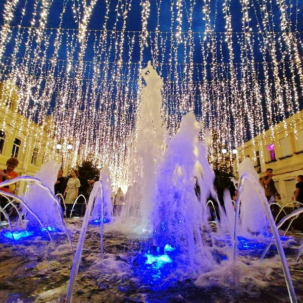
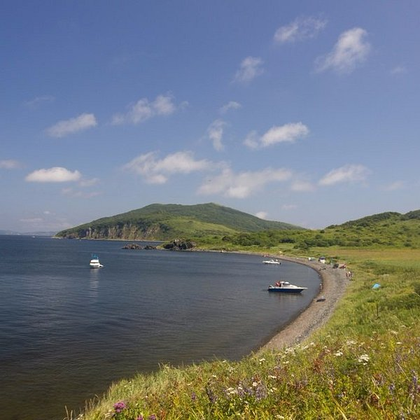

Достопримечательности Владивостока
Золотой мост — один из символов современного Владивостока, вантовый мост через бухту Золотой Рог, открытый в 2012 году к саммиту АТЭС. Его главный пролёт длиной 737 метров делает его одним из самых больших вантовых мостов в мире. Две высокие опоры-пилоны высотой 226 метров видны из многих точек города и стали его визитной карточкой. Мост соединил центр города с его южными районами, значительно улучшив транспортную доступность и сократив время в пути. Для жителей и гостей Владивостока он стал не только важной транспортной артерией, но и популярной смотровой площадкой — с моста открываются потрясающие виды на город и бухту.
Особенно впечатляюще мост выглядит вечером, когда включается эффектная подсветка, превращая инженерное сооружение в произведение искусства. Яркие светодиодные огни создают магическую атмосферу, отражаясь в водах бухты и делая мост видимым из самых отдаленных районов города. Многоцветная иллюминация меняется в зависимости от времени года и праздников, создавая неповторимые световые шоу. В зимние месяцы мост особенно красив на фоне заснеженных сопок, а летом его силуэт эффектно выделяется на фоне ярко-синего неба и изумрудной зелени приморских лесов.

Миллионка

Миллионка — исторический район Владивостока, известный как "владивостокский Арбат", представляет собой уникальный квартал с богатой культурной и торговой историей. Этот живописный район с узкими улочками и старинными зданиями когда-то был центром китайской общины города и местом процветающей торговли. Сегодня Миллионка привлекает туристов своей аутентичной атмосферой, многочисленными кафе, сувенирными лавками и художественными галереями. Здесь можно прогуляться по мощеным улицам, полюбоваться на сохранившуюся архитектуру начала XX века и ощутить дух старого Владивостока.

Остров Рикорда
Маленький остров в заливе Петра Великого с красивыми песчаными пляжами.

Золотой мост
Символ современного Владивостока с потрясающей подсветкой.

Токаревский маяк
Один из старейших маяков Дальнего Востока, построенный в 1876 году.
Владивостокская крепость
Комплекс фортификационных сооружений XIX-XX веков, музей под открытым небом.